2015/9/23【教育工学会2015】
電子書籍に基づく
シームレスラーニングシステム
九州大学大学院
情報知能工学専攻 修士1年
清田 麻寛
背景 → 目的 → 原理 → 環境 → 現状 → 今後
2/24
発表構成
1.背景
2.目的
3.原理
4.環境
5.現状
6.今後
背景 → 目的 → 原理 → 環境 → 現状 → 今後
3/24
シームレスラーニング(1)
フォーマル／インフォーマル
実世界／仮想世界
個人的／社会的
様々な端末
シームレス
時間の制約を受けない
複数タスクの切り替え
ラーニング
場所の制約を受けない
知識の統合
知識へのユビキタスアクセス
複数の教授法
*Wong, L. -H “What seams do we remove in mobile-assisted seamless learning? A critical review of the literature”
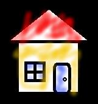
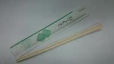
背景 → 目的 → 原理 → 環境 → 現状 → 今後
4/24
シームレスラーニング(2)
語学学習の例
箸 =
リマインド
Chopsticks
授業
Formal
Inf 家
ormal
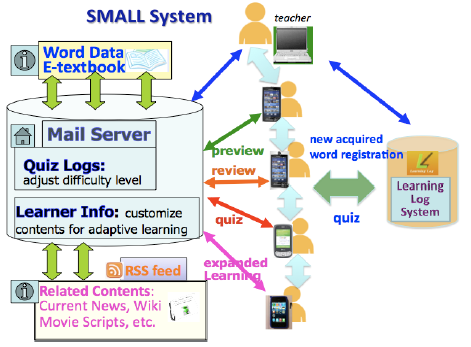
背景 → 目的 → 原理 → 環境 → 現状 → 今後
5/24
シームレスラーニングシステム例1
*SMALL System
*Uosaki, N., “Supporting an English Course Using Handhelds in a Seamless Learning Environment”
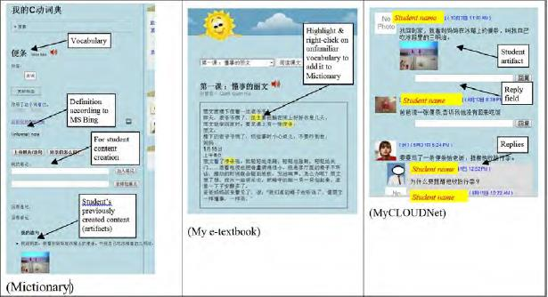
背景 → 目的 → 原理 → 環境 → 現状 → 今後
6/24
シームレスラーニングシステム例2
*MyCloud
コンテキストベース, 知識共有用 etc..
*Wong, L. -H “Unpacking the Researcher-Teacher Co-Design Process of a Seamless Learning Environment with the TPACK Framework”
背景 → 目的 → 原理 → 環境 → 現状 → 今後
7/24
シームレスラーニング (3)
場所
時間
コンテキスト
シームレス
教材
ラーニング
背景 → 目的 → 原理 → 環境 → 現状 → 今後
8/24
教材とシームレスラーニング
学習者は様々な行動をとれる
ページめくり
メモ (書き込み)
マーカー (強調)
ブックマーク (付箋)
教材 = 学習の基本
記録することで多くの情報が得られる可能性
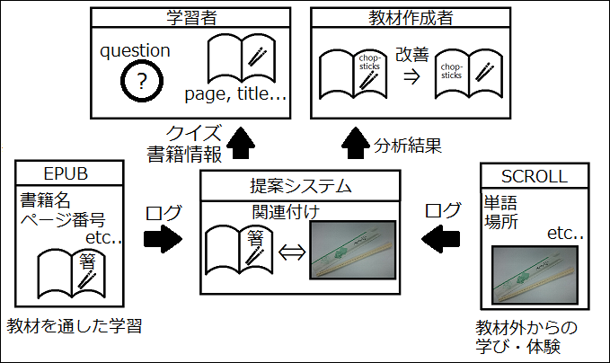
背景 → 目的 → 原理 → 環境 → 現状 → 今後
9/24
目的
電子書籍(EPUB)に対する学習者の動作ログを記録し，
学習者へのクイズのフィードバック等を行うシステムの
評価とログの分析．
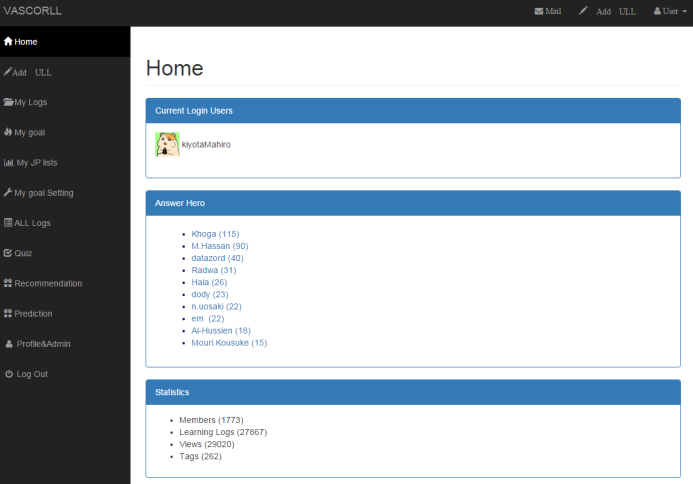
背景 → 目的 → 原理 → 環境 → 現状 → 今後
10/24
SCROLL(1)
*SCROLL = System for Capturing and Reusing Of Learning Log
*Ogata, H., “SCROLL: Supporting to Share and Reuse Ubiquitous Learning Log in the Context of Language Learning”
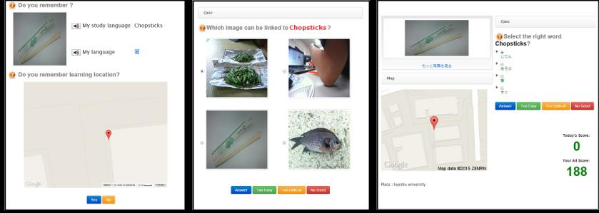
背景 → 目的 → 原理 → 環境 → 現状 → 今後
11/24
SCROLL(2)
Yes / No 2択
画像4択
テキスト4択
背景 → 目的 → 原理 → 環境 → 現状 → 今後
12/24
目的 (再掲)
電子書籍(EPUB)に対する学習者の動作ログを記録し，
学習者へのクイズのフィードバック等を行うシステムの
評価とログの分析．

背景 → 目的 → 原理 → 環境 → 現状 → 今後
13/24
EPUB (Electronic PUBlication) 電子書籍フォーマットの1つ
HTML5 + CSS
リフロー機能
PDFからも変換可能
EPUB.JSライブラリが存在
EPUB.JS : https://github.com/futurepress/epub.js/
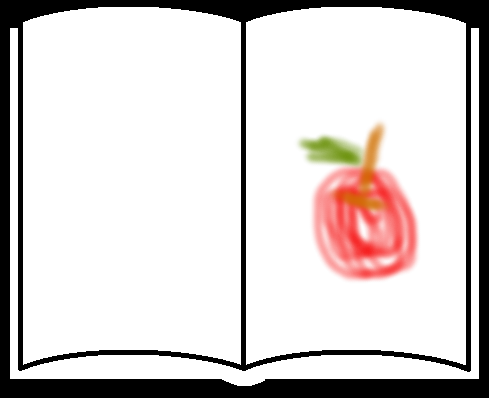
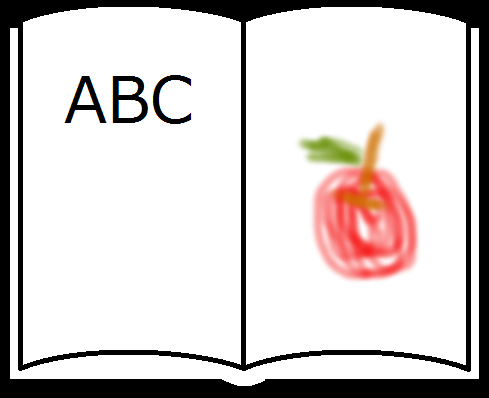
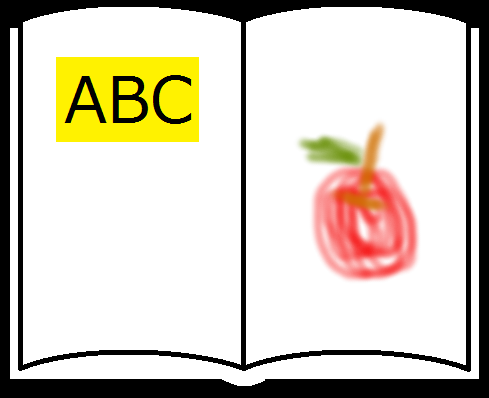
背景 → 目的 → 原理 → 環境 → 現状 → 今後
14/24
記録する動作
本を開く／閉じる、ページをめくるなど基本動作に加え・・・
メモ :
どこに何を書いた
マーカー :
どこの何を強調した
ブックマーク :
どこにつけた/外した
ログとして記録
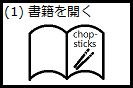
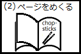
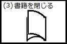
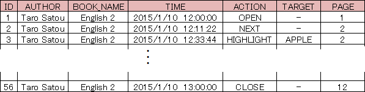
背景 → 目的 → 原理 → 環境 → 現状 → 今後
15/24
ログの記録形式
略


背景 → 目的 → 原理 → 環境 → 現状 → 今後
16/24
ログの用途例1 (1)
箸
「箸」は
=
○○の△ページで学習
Chopsticks
授業内
授業外


背景 → 目的 → 原理 → 環境 → 現状 → 今後
17/24
ログの用途例1 (2)
箸 =
○○で学んだ「箸」
Chopsticks
は次の内どれ？
授業内
授業外
背景 → 目的 → 原理 → 環境 → 現状 → 今後
18/24
ログの用途例2
このページに
Memo :
URLを書き足すべき
URL : http://~
学習者
教材作成者

背景 → 目的 → 原理 → 環境 → 現状 → 今後
19/24
ログの用途例3
多くの人が
このページから
Highlight : Apple
「Apple」を学ぶ
学習者
分析者
背景 → 目的 → 原理 → 環境 → 現状 → 今後
20/24
実装
・使用言語 : HTML5, JavaScript (その他CSSなど)
・動作確認ブラウザ :
└ Google Chrome
└ Firefox
└ Opera
*いずれも最新版で,携帯端末も同ブラウザで動作確認済．
Internet Explorer, Safari, その他端末固有ブラウザは未対応or未検証
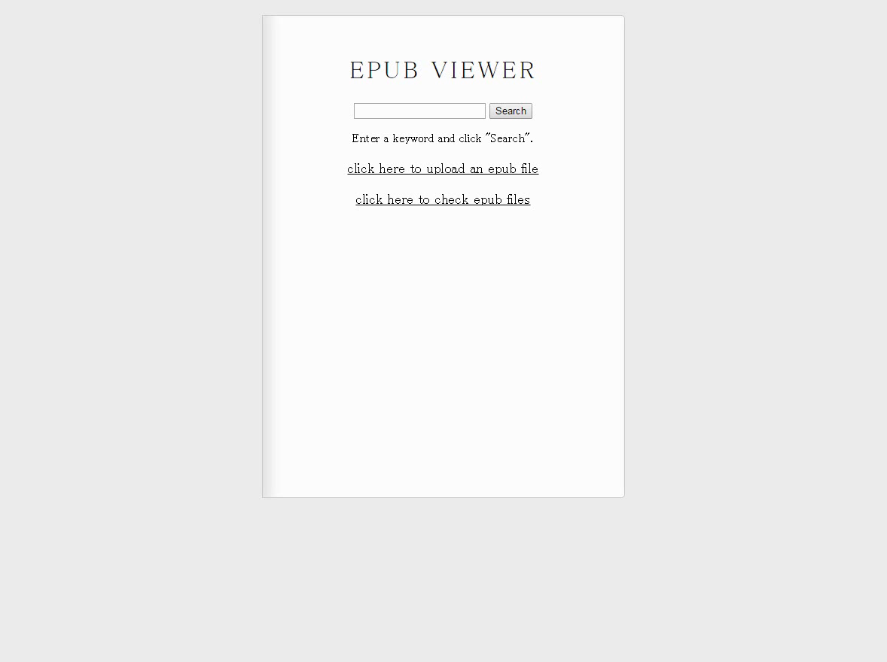
背景 → 目的 → 原理 → 環境 → 現状 → 今後
21/24
ユーザインタフェース (1)
マーカー
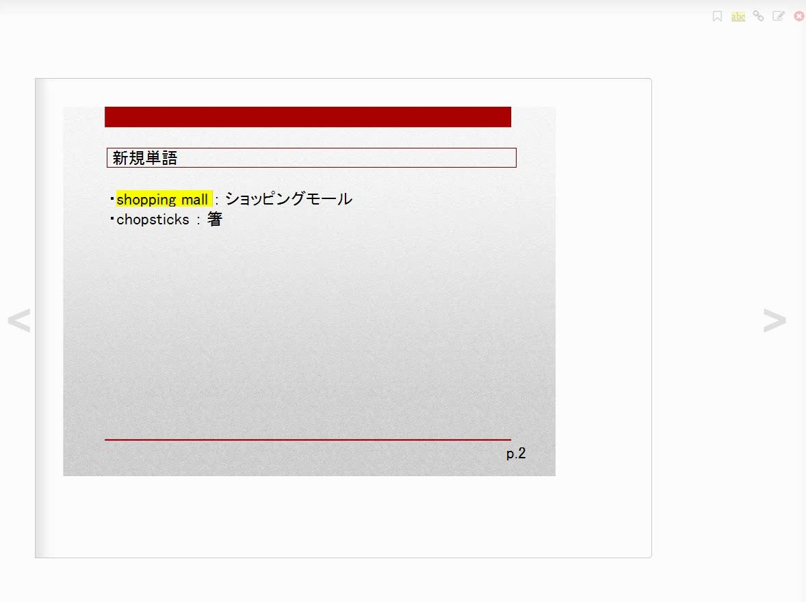
背景 → 目的 → 原理 → 環境 → 現状 → 今後
22/24
ユーザインタフェース (2)
ブックマーク
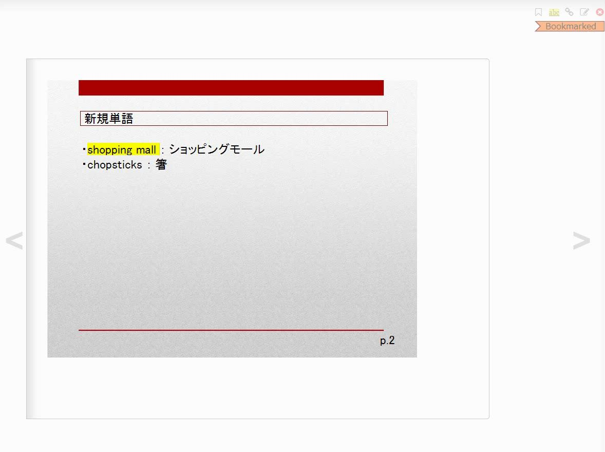
背景 → 目的 → 原理 → 環境 → 現状 → 今後
23/24
ユーザインタフェース (3)
メモ
背景 → 目的 → 原理 → 環境 → 現状 → 今後
24/24
未達成点・今後
ログ送信機能が未実装
データベースの項目が不十分
授業を通した実験
システムの評価
ePubへの変換が確実でない
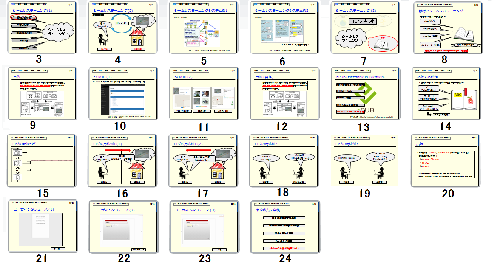
ご清聴ありがとうございました